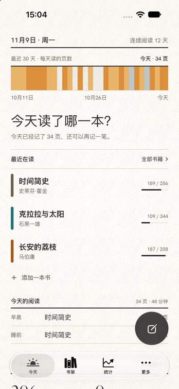
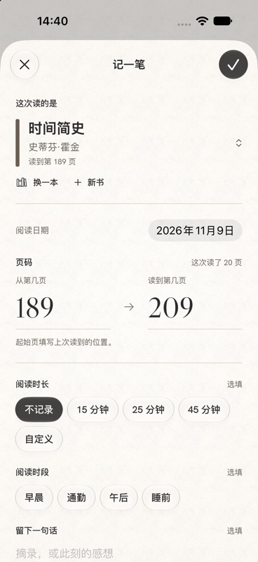
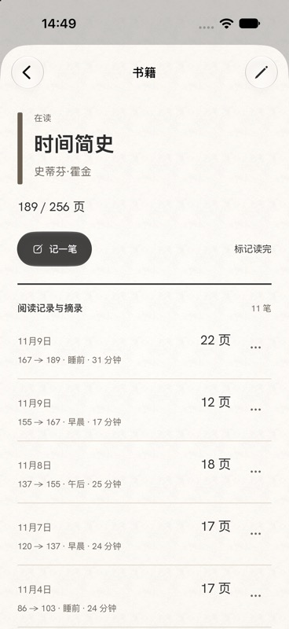
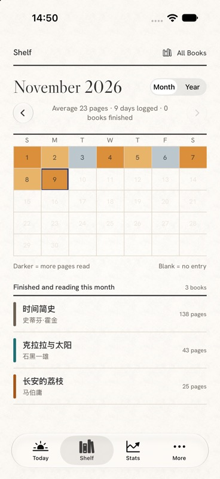
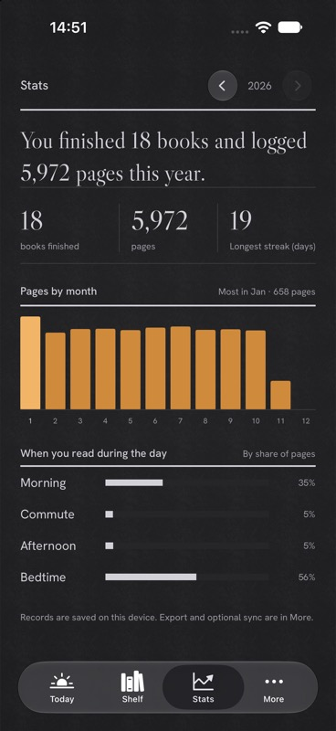

INTERLEAF / A READING JOURNAL
Every page read.
A trace worth keeping.
A book, a reading session, a little progress. Interleaf is a quiet reading journal that remembers where you left off and helps you see how far you’ve come.
iOS 26+ · Preparing for release

01 / CAPTURE THE MOMENT
Read a little.
Leave a little trace.
No timer to start. No target to meet. When you close your book, simply record the page you reached.
- Choose a book and enter the starting and ending pages.
- Duration, time of day and a note are optional.
- Tap the checkmark and get back to your own rhythm.


02 / YOUR OWN SHELF
On your shelf.
In your own time.
Keep books you haven’t started, books in progress and finished books together. Search by title or author, revisit a book’s reading history and mark it finished when you’re ready.
No race. No rankings. Just your reading life.
03 / LOOK BACK
Small moments.
A lasting habit.
Revisit a day in the calendar or take a broader view in Insights. Pages, minutes and reading days make your quiet progress visible.


YOUR RECORDS, YOUR CHOICE
Keep it close.
Take it with you.
Local by default
No Interleaf account required. Books and reading sessions are stored on your device by default.
Sync when you choose
Enable iCloud sync in Settings to sync through your own Apple account.
Keep a complete backup
Export a library backup to preserve books and sessions, or exchange reading sessions through Excel.